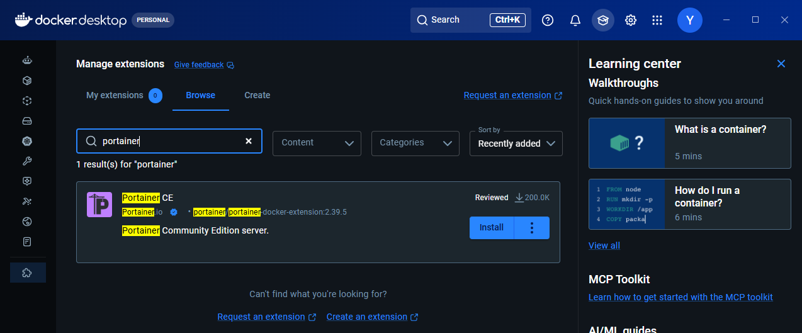
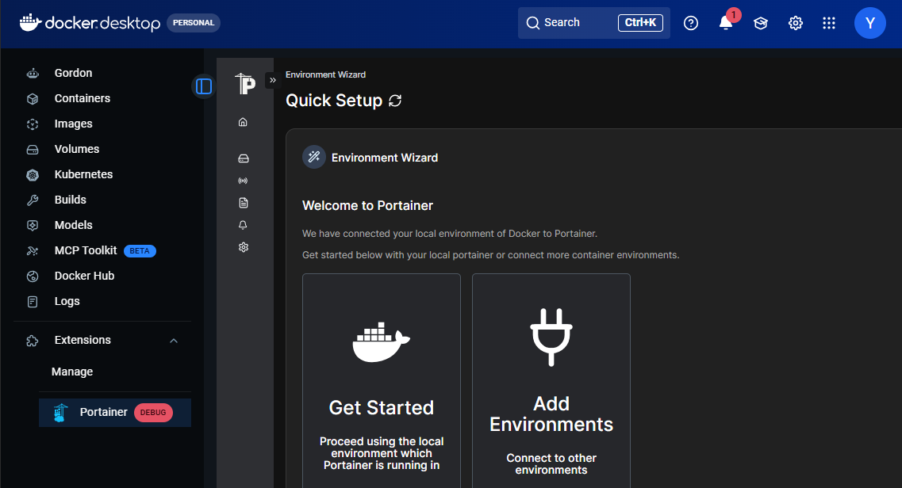
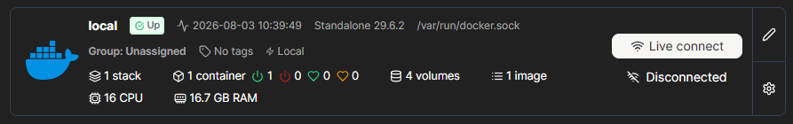

🐳 Docker:
Windows Subsystem for Linux
WSL (Windows Subsystem for Linux) es una característica de Windows que permite ejecutar un entorno Linux real (no una simulación) directamente sobre Windows, sin necesidad de una máquina virtual ni de arranque dual. Gracias a WSL es posible usar herramientas de línea de comandos de Linux, ejecutar scripts Bash y trabajar con aplicaciones Linux integradas en el flujo de trabajo de Windows.
Con WSL2 (la versión actual), no se trata de un simulador de comandos ni de una imitación de Linux. Por debajo corre un kernel Linux auténtico, integrado con Windows de forma muy eficiente. Cuando abres una terminal de Ubuntu en WSL, estás usando Linux real, no una versión "de mentira".
DESTACAR
- El software profesional serio vive en Linux Servidores web, bases de datos, contenedores, herramientas DevOps, entornos de programación en la nube... la inmensa mayoría de la infraestructura tecnológica actual corre sobre Linux. Si vais a trabajar en desarrollo, sistemas o redes, tarde o temprano usaréis Linux a diario.
- Podéis practicar sin dejar Windows WSL elimina la excusa de "no tengo Linux en casa". El PC que ya tenéis (con Windows 10/11) sirve para practicar Linux de verdad, sin instalar nada exótico ni arriesgar el sistema.
- Las herramientas modernas funcionan mejor en Linux Docker, Git, Python, Node.js, servidores web como Nginx o Apache... muchas de estas herramientas están pensadas originalmente para Linux y funcionan de forma más nativa, rápida y "de verdad" ahí que en Windows.
- Es el puente perfecto para aprender sin miedo Antes de dar el salto a un servidor Linux real en producción, WSL permite equivocarse, romper cosas y volver a empezar sin ningún riesgo, todo dentro del mismo portátil con el que ya trabajáis cada día.
- Es gratuito y viene integrado en Windows No hay que comprar licencias ni descargar imágenes de discos complicadas. Con un solo comando, tenéis un Linux funcional en minutos.
Activación y puesta en marcha
👉 Paso 1 — Activar características de Windows
- Plataforma de máquina virtual
- Subsistema de Windows para Linux
{kind=link}
👉 Paso 2 — Instalación de WSL + Ubuntu 24.04
Abrir PowerShell como administrador y ejecutar:
winget install Microsoft.WSL # Instalar WSL con winget
wsl --version # Comprobar la instalación
wsl --install -d Ubuntu-24.04 # Instalar Ubuntu 24.04
wsl --list --online # Si no aparece, listar las disponibles
Primera vez que arranque Ubuntu, el sistema solicitará, Usuario y contraseña para Administrador
{kind=link}
👉 Paso 3 — Terminal de Windows
La Terminal de Windows es una herramienta «todo en uno» disponible de forma gratuita en la Microsoft Store. Una vez instalada, basta con buscarla en el menú Inicio para ejecutarla.
Su principal ventaja es que permite abrir múltiples pestañas con diferentes entornos (PowerShell, CMD, Ubuntu...) en una sola ventana, con personalización completa de colores y fuentes.
{kind=link}
Una vez dentro de Ubuntu: sudo apt update && sudo apt upgrade -y && apt autoremove
WSL
| Antes de WSL | Con WSL |
|---|---|
| Máquina virtual pesada y lenta | Integración ligera y rápida con Windows |
| Instalar Linux aparte (dual boot) | Un solo comando, sin reiniciar |
| Simulador de comandos | Kernel Linux real |
| Cambiar de sistema operativo | Cambiar de ventana |
Conflictos
WSL 2 requiere que la característica de Hyper-V (el hipervisor nativo de Windows) esté activada obligatoriamente. En el pasado, cuando Hyper-V estaba activo, VirtualBox no podía utilizar su propio motor de virtualización de manera eficiente, lo que causaba que las máquinas virtuales de VirtualBox funcionaran con un rendimiento muy lento o directamente se cerraran con errores (como pantallas azules o fallos al iniciar).
Solución:
{kind=link}
- Si la consola te devuelve hypervisorlaunchtype Auto, significa que el hipervisor de Windows arranca automáticamente con el sistema (necesario para Docker Desktop, WSL 2 y máquinas virtuales de Hyper-V).
- Si te devuelve hypervisorlaunchtype Off, significa que está desactivado (lo que permite que programas como VirtualBox funcionen sin conflictos de virtualización a nivel de hardware, pero impedirá que Docker y WSL 2 funcionen).
Docker Desktop
Aplicación de interfaz gráfica para (Windows, Mac o Linux) que empaqueta todo el motor de Docker junto con herramientas adicionales, permitiéndote gestionar contenedores, imágenes y volúmenes de manera visual y sencilla sin depender exclusivamente de la línea de comandos.
INSTALACIÓN E INTEGRACIÓN CON WSL
👉 Paso 1 — Instalar Docker Desktop
# PowerShell con winget
winget install Docker.DockerDesktop
- Iniciar Docker Desktop desde el menú de inicio.
- Esperar a que termine la configuración inicial.
- Ir a: Settings → Resources → WSL Integration
- Activar: Ubuntu-24.04
{kind=link}
👉 Paso 3 — Comprobar Docker desde Ubuntu
{kind=link}
Portainer
Sustituye los comandos de terminal por un panel visual desde el que se pueden administrar contenedores, imágenes, redes y volúmenes de forma intuitiva. Es especialmente útil en entornos de desarrollo y aprendizaje, ya que permite ver el estado del sistema en tiempo real sin necesidad de recordar comandos.
- 👉 Interfaz muy intuitiva: desde el panel de control se puede monitorizar el consumo de CPU y RAM de cada contenedor, revisar los logs en tiempo real y acceder directamente a la consola de un servicio con un solo clic. También permite gestionar redes y volúmenes de forma visual, lo que resulta muy práctico frente a la interfaz más limitada de Docker Desktop.
- 👉 Una de sus funciones más potentes son los Stacks, que permiten desplegar aplicaciones completas copiando y pegando el contenido de un archivo
docker-compose.ymldirectamente en el navegador. Esto simplifica enormemente el despliegue de proyectos complejos sin necesidad de gestionar archivos locales de forma constante.
{kind=link}
INSTALACIÓN
La forma más sencilla de instalar Portainer en Docker Desktop es a través de las extensiones. Hay que abrir Docker Desktop, ir a la sección Extensions en el menú lateral izquierdo y buscar «Portainer» en el buscador. Al hacer clic en instalar, la aplicación descarga la imagen necesaria y configura el contenedor de gestión automáticamente.
 |
 |
 |
{kind=link}
{kind=link}
{kind=link}
👉👉👉
Docker con VS Code
A continuación, se muestra una guía con tres formas de programar directamente dentro de contenedores Docker utilizando Visual Studio Code para aislar dependencias.
- Manual
- Con ciertos plugins de VSC 23.15min
Requisitos Previos
- Docker Desktop: Instalado y en ejecución.
- Visual Studio Code: Con las extensiones:
Docker(de Microsoft)Dev Containers(de Microsoft)
Paso 1: Configuración del Proyecto Base (FastAPI)
Crea una carpeta para tu proyecto y añade los siguientes archivos básicos:
1.1. main.py
from fastapi import FastAPI
app = FastAPI()
@app.get("/")
def read_root():
return {"Hello": "World desde Docker"}
@app.get("/items/{item_id}")
def read_item(item_id: int, q: str = None):
return {"item_id": item_id, "q": q}
1.2. requirements.txt
fastapi
uvicorn
Paso 2: Método Manual (Docker Puro)
Este método consiste en construir la imagen y correr el contenedor manualmente enlazando carpetas.
2.1. Crear el Dockerfile
FROM python:3.11-slim
WORKDIR /code
COPY requirements.txt .
RUN pip install --no-cache-dir -r requirements.txt
COPY . .
EXPOSE 8000
CMD ["uvicorn", "main:app", "--host", "0.0.0.0", "--port", "8000", "--reload"]
2.2. Construir la imagen
docker build -t imagen-fastapi .
2.3. Ejecutar el contenedor con volumen (sincronización de código)
# PowerShell (Windows)
docker run -d -p 8000:8000 -v ${PWD}:/code imagen-fastapi
# Linux / Mac
docker run -d -p 8000:8000 -v $(pwd):/code imagen-fastapi
Nota: El flag
-vmonta tu carpeta local dentro del contenedor, por lo que cualquier cambio en el código se refleja en tiempo real sin reconstruir la imagen.
Paso 3: Conexión mediante la Extensión "Dev Containers"
Este método permite usar todas las ayudas de VS Code (IntelliSense, autocompletado) directamente dentro del contenedor.
- Con el contenedor del paso anterior en ejecución, haz clic en el botón azul (
><) de la esquina inferior izquierda de VS Code. - Selecciona "Attach to Running Container".
- Elige el contenedor
imagen-fastapide la lista. - Se abrirá una nueva ventana de VS Code conectada al contenedor. Abre la carpeta
/code. - Tip: Instala la extensión de Python dentro del contenedor para tener autocompletado y análisis de errores.
Paso 4: Configuración de Ambiente Nativo (Dev Container Config)
Para proyectos nuevos donde quieres que VS Code configure todo el ambiente automáticamente.
- Crea una carpeta vacía y ábrela en VS Code.
- Presiona
Ctrl + Shift + Py busca:Dev Containers: Add Dev Container Configuration File... - Selecciona Python 3 (versión 3.11 o similar) de la lista de plantillas.
- VS Code creará automáticamente una carpeta
.devcontainer/con un archivodevcontainer.json. - Haz clic en el botón azul inferior (
><) y selecciona "Reopen in Container". - VS Code construirá la imagen y reabrirá el proyecto ya dentro del contenedor.
Resumen de Comandos Útiles
| Comando | Descripción |
|---|---|
docker ps |
Ver contenedores activos |
docker stop <ID> |
Detener un contenedor |
docker rm <ID> |
Eliminar un contenedor |
docker images |
Ver imágenes creadas |
docker build -t <nombre> . |
Construir una imagen desde un Dockerfile |
docker run -d -p <host>:<cont> <imagen> |
Ejecutar un contenedor en segundo plano |
Tutorial basado en el canal Píldoras de Programación.
👉👉👉 Visual Studio Code usando WSL y Docker
Una vez instalado WSL, configurado Ubuntu y teniendo Docker Desktop integrado con Visual Studio Code, el siguiente paso es trabajar directamente desde el entorno Linux y comenzar a ejecutar contenedores.
Este documento describe cómo utilizar Visual Studio Code dentro de Ubuntu y cómo crear y ejecutar un contenedor sencillo con Python, que servirá como base para proyectos más complejos.
Extensiones necesarias en Visual Studio Code para trabajar con Docker y WSL
Instalar Visual Studio Code. Se recomienda instalar las siguientes extensiones: - Python - Jupyter - WSL (si usáis WSL2) - GitHub Copilot
-
Remote - WSL
Permite abrir y trabajar en el entorno Linux (Ubuntu) desde Visual Studio Code utilizando WSL. -
Docker
Permite crear, ejecutar y gestionar contenedores e imágenes Docker directamente desde Visual Studio Code. -
Python
Proporciona soporte para desarrollar, ejecutar y depurar scripts Python dentro del editor. -
Dev Containers
Permite abrir proyectos directamente dentro de contenedores Docker para trabajar en entornos aislados y reproducibles. -
YAML
Facilita la edición y validación de archivos de configuración comodocker-compose.yml. -
GitHub Pull Requests and Issues
Permite gestionar repositorios, cambios y revisiones de código desde Visual Studio Code. -
Markdown All in One
Mejora la edición de archivos Markdown con herramientas de formato, tablas y atajos de escritura.
1. Ejecutar Visual Studio Code en Ubuntu (WSL)
Trabajar desde Ubuntu dentro de WSL permite utilizar herramientas Linux reales, gestionar dependencias de forma más sencilla y ejecutar contenedores Docker en un entorno similar a producción.
1.1 Abrir Ubuntu (WSL)
wsl
o bien:
ubuntu
1.2 Ir al directorio de trabajo
cd ~
mkdir proyectos
cd proyectos
1.3 Abrir Visual Studio Code desde Ubuntu
code .
Esto:
- Abre Visual Studio Code
- Conecta automáticamente con WSL
- Permite trabajar como si estuvieras en Linux real
1.4 Comprobar que Docker funciona
docker --version
docker run hello-world
2. Uso de contenedores Docker desde Visual Studio Code
Los contenedores permiten ejecutar aplicaciones en entornos aislados, reproducibles y portables.
2.1 Crear un proyecto Python
mkdir python-docker
cd python-docker
2.2 Crear un script Python
Archivo:
nano app.py
Contenido:
print("Hola desde un contenedor Docker con Python")
2.3 Crear un Dockerfile
Archivo:
nano Dockerfile
Contenido:
FROM python:3.12-slim
WORKDIR /app
COPY app.py .
CMD ["python", "app.py"]
2.4 Construir la imagen
docker build -t mi-python .
2.5 Ejecutar el contenedor
docker run mi-python
Salida esperada:
Hola desde un contenedor Docker con Python
Resumen
Se ha aprendido a:
- Ejecutar VS Code en Ubuntu
- Crear un script Python
- Crear un Dockerfile
- Construir una imagen
- Ejecutar un contenedor
title: "Docker: VSC" weight: 3
👉👉👉 Ejercicio: Programar en Contenedores Docker con VS Code
🎬 Enlace al video original: https://youtu.be/9_WkqhLMUZA
Este ejercicio te guiará a través de las tres formas de programar directamente dentro de contenedores Docker utilizando Visual Studio Code para aislar dependencias.
Requisitos Previos
- Docker Desktop: Instalado y en ejecución.
- Visual Studio Code: Con las extensiones:
Docker(de Microsoft)Dev Containers(de Microsoft)
Paso 1: Configuración del Proyecto Base (FastAPI)
Crea una carpeta para tu proyecto y añade los siguientes archivos básicos:
1.1. main.py
from fastapi import FastAPI
app = FastAPI()
@app.get("/")
def read_root():
return {"Hello": "World desde Docker"}
@app.get("/items/{item_id}")
def read_item(item_id: int, q: str = None):
return {"item_id": item_id, "q": q}
1.2. requirements.txt
fastapi
uvicorn
Paso 2: Método Manual (Docker Puro)
Este método consiste en construir la imagen y correr el contenedor manualmente enlazando carpetas.
2.1. Crear el Dockerfile
FROM python:3.11-slim
WORKDIR /code
COPY requirements.txt .
RUN pip install --no-cache-dir -r requirements.txt
COPY . .
EXPOSE 8000
CMD ["uvicorn", "main:app", "--host", "0.0.0.0", "--port", "8000", "--reload"]
2.2. Construir la imagen
docker build -t imagen-fastapi .
2.3. Ejecutar el contenedor con volumen (sincronización de código)
# PowerShell (Windows)
docker run -d -p 8000:8000 -v ${PWD}:/code imagen-fastapi
# Linux / Mac
docker run -d -p 8000:8000 -v $(pwd):/code imagen-fastapi
Nota: El flag
-vmonta tu carpeta local dentro del contenedor, por lo que cualquier cambio en el código se refleja en tiempo real sin reconstruir la imagen.
Paso 3: Conexión mediante la Extensión "Dev Containers"
Este método permite usar todas las ayudas de VS Code (IntelliSense, autocompletado) directamente dentro del contenedor.
- Con el contenedor del paso anterior en ejecución, haz clic en el botón azul (
><) de la esquina inferior izquierda de VS Code. - Selecciona "Attach to Running Container".
- Elige el contenedor
imagen-fastapide la lista. - Se abrirá una nueva ventana de VS Code conectada al contenedor. Abre la carpeta
/code. - Tip: Instala la extensión de Python dentro del contenedor para tener autocompletado y análisis de errores.
Paso 4: Configuración de Ambiente Nativo (Dev Container Config)
Para proyectos nuevos donde quieres que VS Code configure todo el ambiente automáticamente.
- Crea una carpeta vacía y ábrela en VS Code.
- Presiona
Ctrl + Shift + Py busca:Dev Containers: Add Dev Container Configuration File... - Selecciona Python 3 (versión 3.11 o similar) de la lista de plantillas.
- VS Code creará automáticamente una carpeta
.devcontainer/con un archivodevcontainer.json. - Haz clic en el botón azul inferior (
><) y selecciona "Reopen in Container". - VS Code construirá la imagen y reabrirá el proyecto ya dentro del contenedor.
Resumen de Comandos Útiles
| Comando | Descripción |
|---|---|
docker ps |
Ver contenedores activos |
docker stop <ID> |
Detener un contenedor |
docker rm <ID> |
Eliminar un contenedor |
docker images |
Ver imágenes creadas |
docker build -t <nombre> . |
Construir una imagen desde un Dockerfile |
docker run -d -p <host>:<cont> <imagen> |
Ejecutar un contenedor en segundo plano |
Tutorial basado en el canal Píldoras de Programación.
👉👉👉 Visual Studio Code usando WSL y Docker
Una vez instalado WSL, configurado Ubuntu y teniendo Docker Desktop integrado con Visual Studio Code, el siguiente paso es trabajar directamente desde el entorno Linux y comenzar a ejecutar contenedores.
Este documento describe cómo utilizar Visual Studio Code dentro de Ubuntu y cómo crear y ejecutar un contenedor sencillo con Python, que servirá como base para proyectos más complejos.
Extensiones necesarias en Visual Studio Code para trabajar con Docker y WSL
Instalar Visual Studio Code. Se recomienda instalar las siguientes extensiones: - Python - Jupyter - WSL (si usáis WSL2) - GitHub Copilot
-
Remote - WSL
Permite abrir y trabajar en el entorno Linux (Ubuntu) desde Visual Studio Code utilizando WSL. -
Docker
Permite crear, ejecutar y gestionar contenedores e imágenes Docker directamente desde Visual Studio Code. -
Python
Proporciona soporte para desarrollar, ejecutar y depurar scripts Python dentro del editor. -
Dev Containers
Permite abrir proyectos directamente dentro de contenedores Docker para trabajar en entornos aislados y reproducibles. -
YAML
Facilita la edición y validación de archivos de configuración comodocker-compose.yml. -
GitHub Pull Requests and Issues
Permite gestionar repositorios, cambios y revisiones de código desde Visual Studio Code. -
Markdown All in One
Mejora la edición de archivos Markdown con herramientas de formato, tablas y atajos de escritura.
1. Ejecutar Visual Studio Code en Ubuntu (WSL)
Trabajar desde Ubuntu dentro de WSL permite utilizar herramientas Linux reales, gestionar dependencias de forma más sencilla y ejecutar contenedores Docker en un entorno similar a producción.
1.1 Abrir Ubuntu (WSL)
wsl
o bien:
ubuntu
1.2 Ir al directorio de trabajo
cd ~
mkdir proyectos
cd proyectos
1.3 Abrir Visual Studio Code desde Ubuntu
code .
Esto:
- Abre Visual Studio Code
- Conecta automáticamente con WSL
- Permite trabajar como si estuvieras en Linux real
1.4 Comprobar que Docker funciona
docker --version
docker run hello-world
👉👉👉 2. Uso de contenedores Docker desde Visual Studio Code
Los contenedores permiten ejecutar aplicaciones en entornos aislados, reproducibles y portables.
2.1 Crear un proyecto Python
mkdir python-docker
cd python-docker
2.2 Crear un script Python
Archivo:
nano app.py
Contenido:
print("Hola desde un contenedor Docker con Python")
2.3 Crear un Dockerfile
Archivo:
nano Dockerfile
Contenido:
FROM python:3.12-slim
WORKDIR /app
COPY app.py .
CMD ["python", "app.py"]
2.4 Construir la imagen
docker build -t mi-python .
2.5 Ejecutar el contenedor
docker run mi-python
Salida esperada:
Hola desde un contenedor Docker con Python
👉👉👉 Resumen
Se ha aprendido a:
- Ejecutar VS Code en Ubuntu
- Crear un script Python
- Crear un Dockerfile
- Construir una imagen
- Ejecutar un contenedor